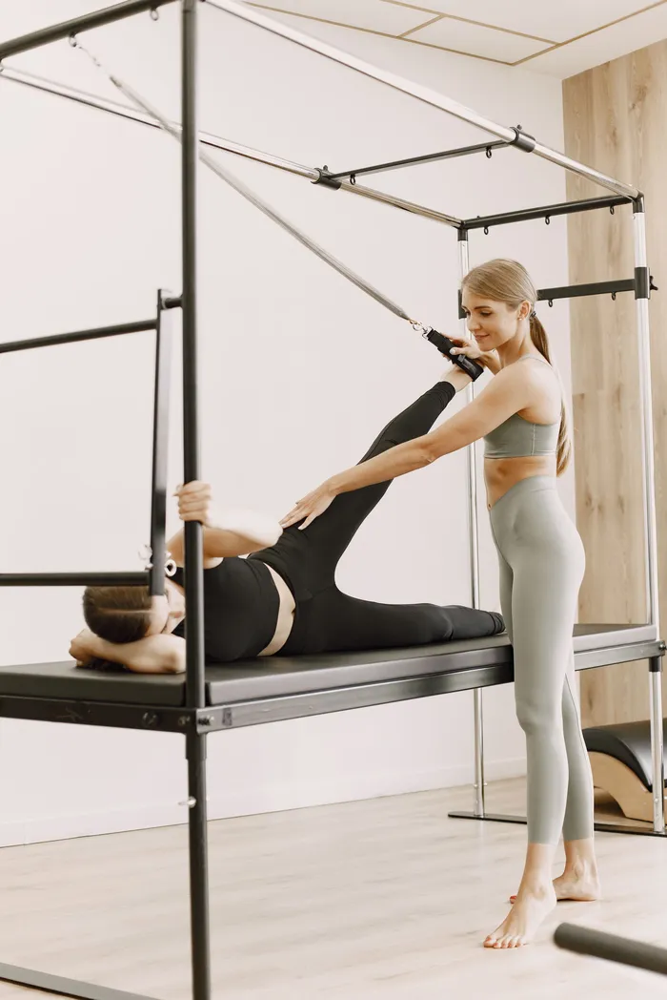
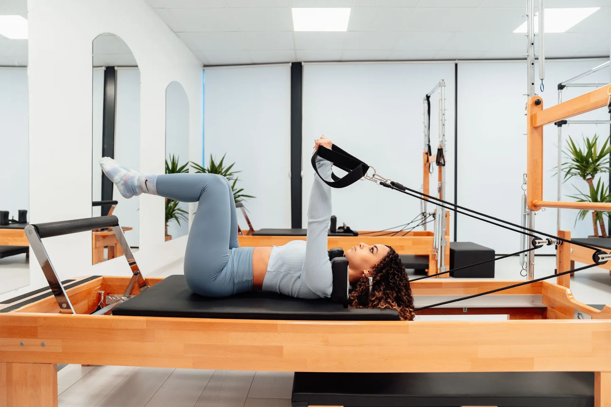
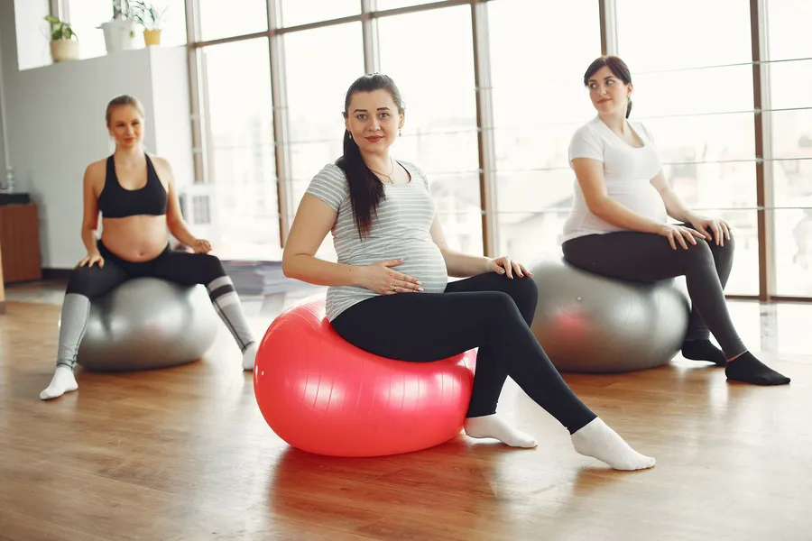
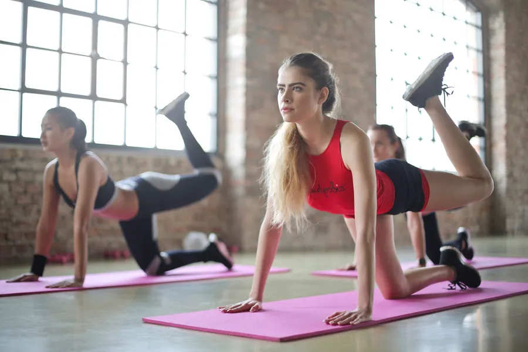
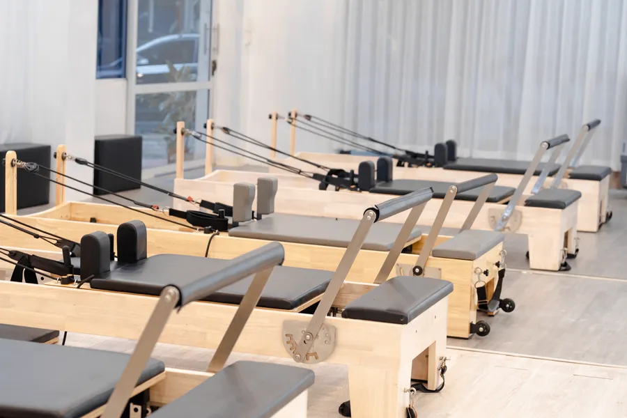

EkipmanlıReformer / Cadillac pilates
Yaylı reformer ve cadillac ile kontrollü, akıcı hareketler; güç, denge ve esneklik.

Reformer ve cadillac pilatesi, hamile pilatesi ve fonksiyonel antrenman. Ayşegül Uygur ile, Pamukkale'de.
Başlıklar Instagram profilinizden alındı. Yayında her dersin süresi, seviyesi ve kimler için uygun olduğu yazar.

EkipmanlıYaylı reformer ve cadillac ile kontrollü, akıcı hareketler; güç, denge ve esneklik.

Anne adaylarıDoktorunuzun onayıyla, döneminize uygun hareketler; nefes ve rahatlama ön planda.

Günlük hayatGünlük hareketlere yarayan, vücudu bütün olarak çalıştıran antrenman.

"Bebeğini stüdyoda büyüten pilates eğitmeni."
Ayşegül Uygur'un Instagram biyografisinden. Stüdyonun hikâyesi, eğitmenin deneyimi ve sertifikaları yayında kendi cümlelerinizle yazılır.
